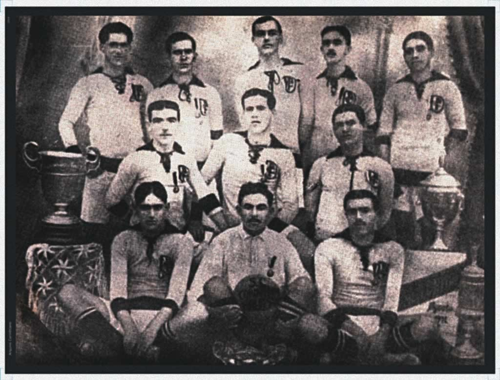
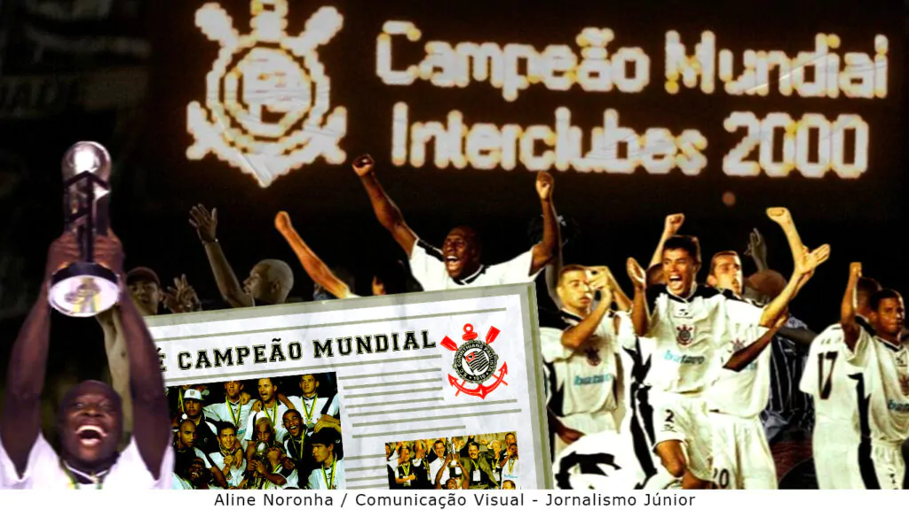
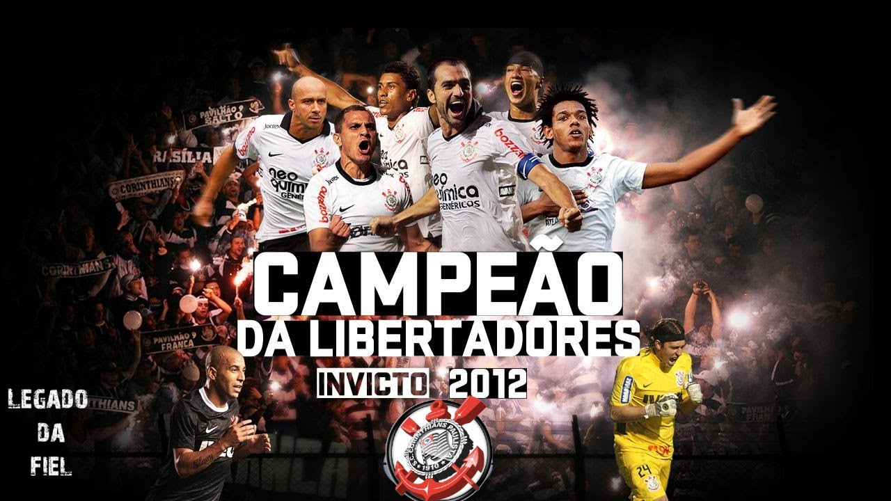
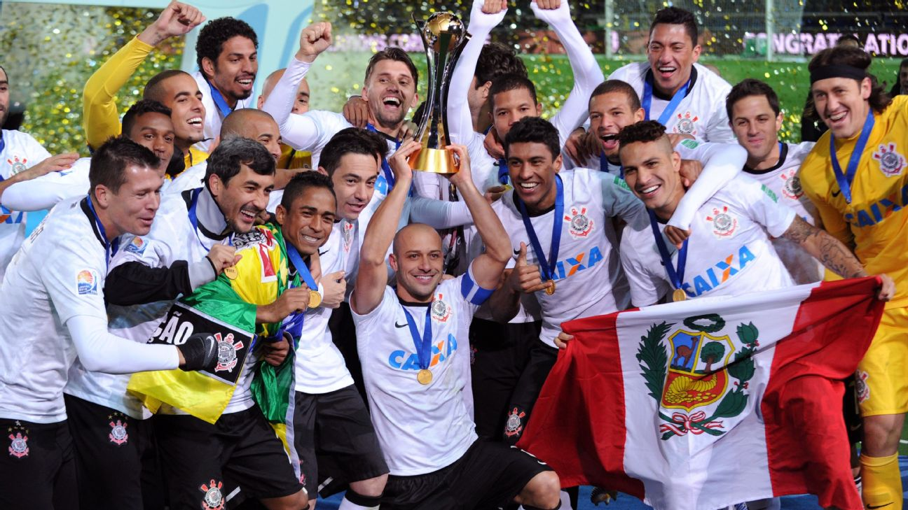
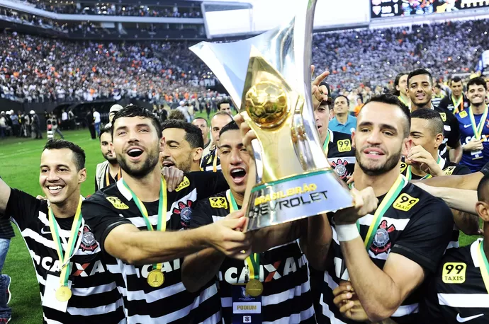

A HISTÓRIA DO TODO PODEROSO TIMÃO:
Em 1910, o Sport Club Corinthians Paulista foi fundado no dia 1º de setembro por um grupo de operários do bairro do Bom Retiro, em São Paulo. A inspiração veio do Corinthian Football Club, equipe inglesa que estava em turnê pelo Brasil.

O primeiro título conquistado pelo Sport Club Corinthians Paulista foi o Campeonato Paulista de 1914. A conquista ocorreu quatro anos após a fundação do clube, em 1910. O Corinthians venceu o Campos Elíseos por 4 a 0, no Parque Antártica, sagrando-se campeão. Os gols da vitória foram marcados por Police, Peres, Neco e Apparício.
OO Corinthians tem diversos títulos, porém alguns marcaram muito a história do clube pela sua importância, seu momento e sua trajetória:

O primeiro título mundial do Corinthians teve direito a partida contra o Real Madrid na semifinal e a final contra o lendário Vasco da Gama de Romário, que havia vencido o Manchester United na semifinal. Foi um jogo incrível no qual o Corinthians se sobressaiu e se consagrou com o primeiro título mundial da história do clube, com jogadores destaques como Dida, Rincón, Ricardinho, Marcelinho Carioca, Edílson, Gamarra e Júnior.
O primeiro título da Libertadores do Corinthians foi conquistado em 2012, de forma invicta, sendo um dos três únicos times brasileiros que conseguiram esse feito.

Em 2012, o primeiro título da Libertadores veio, sem perder para nenhum time, com performances incríveis em diversos jogos: 14 partidas, 8 vitórias e 6 empates. Houve vários destaques no time, como Cássio, Paulinho, Emerson Sheik, Ralf, Elias e Jadson, além de confrontos marcantes contra times como Vasco da Gama, Santos e a final contra o maior time da Argentina, o Boca Juniors.
Para muitos, o título mais marcante da história do clube, o grande MUNDIAL DE 2012:

Logo após vencer a Libertadores, o Corinthians foi classificado para o Mundial por conta do título conquistado. O Timão venceu o Al-Ahly do Egito por 1 a 0 e enfrentou o Chelsea na final. O Chelsea de 2012 é um time lendário que conquistou títulos como: UEFA Champions League 2011-2012, Supercopa da UEFA 2012, e contou com nomes como Didier Drogba, Frank Lampard, John Terry, Petr Čech, Eden Hazard. Porém, não conseguiram vencer o Corinthians na final, perdendo por 1 a 0 com gol de Paolo Guerrero e destaques como Cássio, sendo o melhor goleiro da competição, Jorge Henrique, Emerson Sheik e os outros jogadores que ganharam a Libertadores.
A melhor campanha do Campeonato Brasileiro do Corinthians:

O Brasileirão do Corinthians de 2015 foi fenomenal e a sua melhor campanha no campeonato, com vitórias: 24, empates: 9, derrotas: 5, gols marcados: 71, gols sofridos: 31, saldo de gols: +40, e vários destaques como Renato Augusto, Jadson, Elias, Gil, Cássio, Fagner, etc.